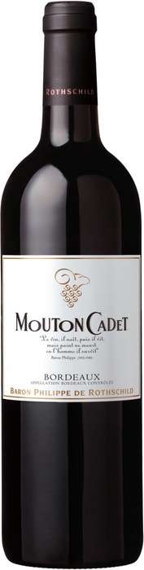

Винный магазин Геофизика
Mouton Cadet, Bordeaux AOC Rouge, 2012
Описание вина
|

|
|
Год:
|
2012
|
|
Страна происхождения:
|
Франция, Бордо
|
|
Тип вина:
|
Красное сухое
|
|
Цена за бутылку:
|
1025 рублей
|
Подробное описание товара
"Mouton Cadet" Rouge — это очень выразительное красное вино, созданное из купажа классических сортов винограда. Мерло придает вину свежесть и аромат спелых красных фруктов (вишня, малина, смородина); Каберне Совиньон укрепляет структуру хорошо интегрированными танинами и наполняет букет оттенками черных ягод; Каберне Фран обеспечивает округлость и бархатную гладкость. Отборный виноград для производства "Мутон Каде" собирается с разных участков региона Бордо, выращенного виноградарями-партнерами под контролем энологов компании Барон Филипп де Ротшильд. Ягоды с разных виноградников винифицируются отдельно. Вино выдерживается в стальных ёмкостях в течение 6-10 месяцев. Перед подачей рекомендуется аэрация. Потенциал хранения вина составляет 3-5 лет.
"Мутон Каде" — флагман среди брендовых вин Барона Филиппа де Ротшильда. Начиная с 1930 года, "Mouton Cadet" совмещает качество, престиж и ноу-хау в соблазнительных и экспрессивных винах. Эти вина — плод щедрой природы и таланта виноделов, результат объединения неподражаемого терруара и страсти Барона Филиппа де Ротшильда.
© Все права защищены. Минздрав предупреждал уже много раз! Хватит пить! Идите учиться уже...